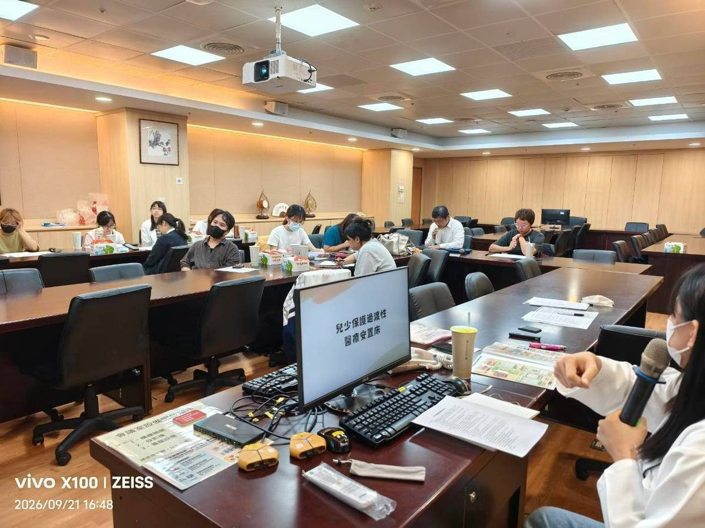

及時挹注與聚焦需求 花蓮慈院跨界合作強化兒少保護安全網

可樂電子報小編/編輯
「孩子看完醫師，回到機構之後，怎麼讓醫療建議真正落地？」花蓮慈濟醫院兒保中心日前舉辦第三季「花蓮縣兒少保護跨網絡聯繫會議」，邀集社政、檢警、醫療及司法單位深入交流，針對兒少保護個案及安置兒少的全方位醫療需求研討合作模式。團隊期望將醫療專業直接延伸至安置機構現場，並感謝花蓮縣政府社會處社工科以公益彩券盈餘款及時挹注，讓醫療、心理輔導與後續照護服務銜接不中斷，構築更穩固的兒少保護網。

花蓮慈濟醫院自民國108年起即定期召開兒少保護跨網絡聯繫會議，透過跨專業定期對話與個案深入研討，共同面對日趨複雜的兒少保護案件。第三季會議聚焦高風險及高複雜度家庭的服務需求，並提出未來兒少保護醫療團隊除了持續提供院內診療服務，更將主動走入安置機構，透過教育訓練、現場了解與個案討論，即時回應第一線機構照顧者的實務需求，讓醫療專業成為安置機構的強大後盾。
花蓮慈院「兒童青少年健康暨保護中心」主任張雲傑醫師指出，過去安置兒少常需往返不同科別就醫，但返回機構後的生活適應與日常照料，仍考驗著一線社工與照顧者。部分兒少雖病況穩定，但機構可能因資訊不足而對照顧產生疑慮；醫療團隊進入機構後，除能實地評估孩子的飲食、生活行為與心理適應，更能協助照顧者深入了解疾病管理與照護要點，降低照護焦慮。
花蓮慈院因應衛生福利部任務規劃，將原設於小兒部的兒保中心提升為院級「兒童青少年健康暨保護中心」，由張雲傑主任與兒童青少年精神科陳珮儀主任共同主持，並納入小兒外科楊筱惠醫師、婦產部停寧萱醫師等核心團隊，擴充跨網絡服務量能。此外，獲花蓮縣政府社會處社工科支持，運用公彩盈餘款補助89萬元，全面投入心理創傷復原與親職支持，讓受創兒少與家庭在各個復原環節都能獲得周全照護。
▶ 延伸觀看
📺 相關報導影片：點此於 YouTube 觀看完整報導